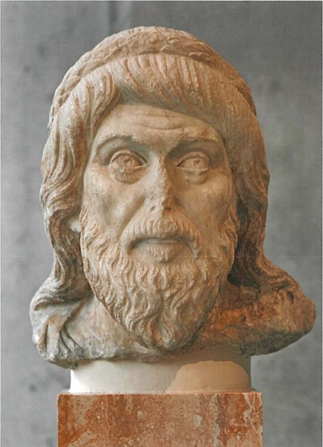
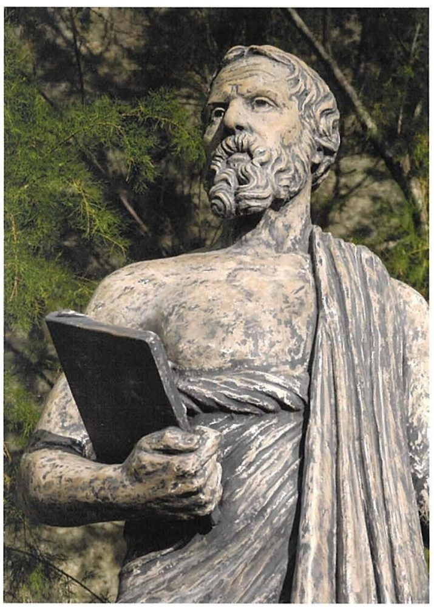
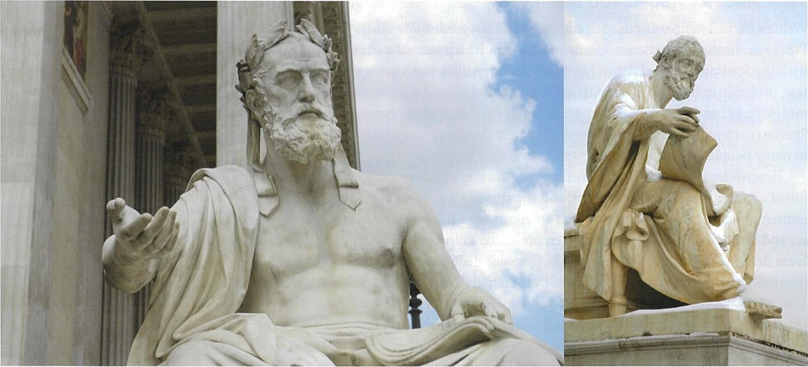
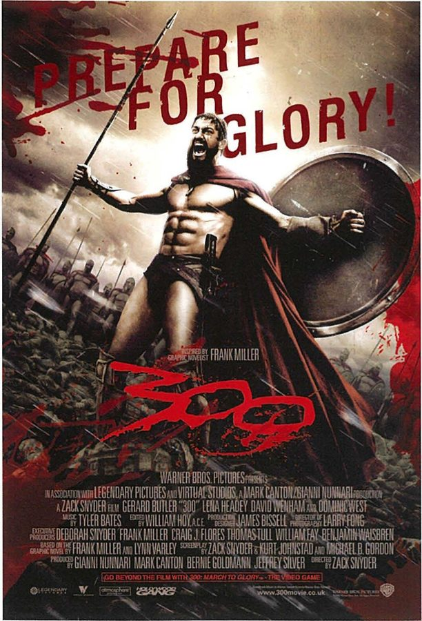

Spartan society to the Battle of Leuctra 371 BC · Lesson 1
How do we know Sparta?
Who told us what we think we know about Sparta — and how far can we trust them?
Year 12 Ancient History · Section II, Option G · Present with → or space · Read on a phone with R

Spaced review · 6 minutes · gesture vote: thumbs up = true · down = false · sideways = not sure
Myth or evidence? And who says so?
- 1Spartan boys left home at seven to be trained by the state. Plutarch, Life of Lycurgus 16 (Cooley D76) · written c. AD 100
- 2Spartans used iron money instead of gold and silver coins. Plutarch, Life of Lycurgus 9 (Cooley D58) · c. AD 100
- 3Spartan women owned land. Aristotle, Politics 2.9 (Cooley D54): “almost two-fifths of the whole country is owned by women” · 330s–320s BC
- 4Spartan mothers sent their sons to war with a shield, saying “with it or on it”. Plutarch, Sayings of Spartan Women (Cooley F35) · c. AD 100
- 5Sparta had no city walls. Xenophon, Hellenika 6.5.27–28 (Cooley K5), on 370/69 BC · an Athenian, writing in the 360s–350s BC
- 6Weak babies were left in a chasm at the foot of Mt Taygetus. Plutarch, Life of Lycurgus 16 (Cooley D73) · c. AD 100

Every claim rests on an outsider — and four of the six on one man, Plutarch, writing centuries later. Almost everything we “know” about Sparta comes to us this way.
Learning intentions and success criteria · 2 minutes
Today’s goals
- explain why most written evidence about Sparta comes from outsiders writing later
- place the six syllabus writers in time and judge how close each was to the events
- explain the Spartan mirage and how historians respond to it
- place Herodotus, Thucydides, Xenophon, Aristotle, Pausanias and Plutarch on a timeline relative to Leuctra (371 BC) and say which were contemporaries
- explain what the Spartan mirage is and why it is a problem for historians
- judge what a named writer is reliable for, and what he is not
- describe how Section II of the HSC examination is structured and how it uses sources
A mirage looks real from a distance but is not quite there: the Spartan mirage is the idealised, partly invented picture of Sparta. Contemporary means living, or written, at the time of the events described.
Note-making · today’s routine
How to structure your notes
questions and key terms
short phrases, arrows (→ led to), abbreviations (c. = about; Thuc. = Thucydides)
- 1Listen and look firstDon’t copy while the slide is being explained.
- 2Write your own notes at each ✎ checkpointPhrases, not sentences. Arrows for cause and effect.
- 3Compare with the model notesThey appear one row at a time. Add what you missed in a second colour.
- 4Copy each cue question into the left columnLater, cover your notes and answer the cue questions from memory.
- 5Finish with a three-sentence summaryFive checkpoints: no voice of its own · the writers in time · evidence from inside Sparta · the Spartan mirage · reliable for what?
Key vocabulary · start the unit word wall
Words you will use all unit
| Thinking about sources | Meaning |
|---|---|
| Spartan mirage | the idealised, distorted picture of Sparta built up by ancient writers and by the Spartans themselves |
| contemporary | living, or written, at the time of the events described |
| provenance | where a source comes from: who made it, when, where and for whom |
| perspective | a source’s point of view, shaped by who made it and what he believed |
| autopsy | in history, seeing something with your own eyes, as Pausanias did |
| fragment | a surviving piece of a lost work, on papyrus or quoted by a later writer |
| Sparta and its evidence | Meaning |
|---|---|
| Lacedaemonians | the Greek writers’ name for the Spartans (Cooley: Lakedaimonians); Lacedaemon was the state and its territory |
| Spartiate | a full Spartan citizen; Spartiates called themselves homoioi, “equals” or “peers” |
| laconophile | someone who admires Sparta and its way of life |
| votive offering | a gift dedicated to a god, often in thanks or to keep a promise |
| epigraphy | the study of inscriptions carved, cast or scratched on stone, metal or pottery |
Spelling: Cooley’s translations use Greek forms (Lykourgos, Tyrtaios, Alkman, Lakedaimonians). In your own writing use Lycurgus, Tyrtaeus, Alcman — and be consistent. The syllabus spells periokoi; most books use perioikoi. Both are correct.
1 · No voice of its own · I do
A famous society with almost no voice of its own
Cooley: Sparta “dominated interstate politics in mainland Greece throughout the Archaic and Classical period”. Yet the Spartans left us almost nothing written about themselves.
Apart from two poets of the seventh century BC, namely Tyrtaios and Alkman, we do not have any literary sources that originate from Sparta.
… there is no ancient text that can serve as a ‘main source’ …
M. G. L. Cooley (ed.), Sparta, 2nd edn (2023), introduction to the literary sources · a modern historian, not an ancient source
The writers came from Athens, Asia Minor, Boeotia and northern Greece, each with reasons to praise or blame Sparta.
The fullest accounts, by Plutarch and Pausanias, were written five to eight centuries after many of the events they describe.
Sparta changed greatly after it lost Messenia in 370/69 BC, so later writers often described a Sparta that no longer existed.
Cooley: “In the classical period, Sparta was not easily accessible to strangers”. Even a careful contemporary could not find out basic facts.
1 · No voice of its own · We do — reading a source with OVPRL
The historian’s problem in one sentence
[68.2] But it would be impossible for me to give the exact numbers of the forces on either side, whether of the individual units or the whole armies. The secret nature of their political arrangements makes it impossible to discover the numbers of Lakedaimonians, and as for the others, the natural human tendency to exaggerate one’s own resources makes all estimates unreliable. …
[74.3] … On the Lakedaimonian side, allied casualties were negligible; as for their own losses, it is difficult to establish the truth, but anecdotal evidence suggests they were about 300 dead.
Thucydides, History of the Peloponnesian War 5.68.2 and 5.74.3 · an Athenian general, exiled in 424 BC, writing in the late 5th century BC · trans. B. Wilson · Cooley E101, E104 (also D83)
| Ask | Model answer | |
|---|---|---|
| O | An Athenian general in this war: how might that limit what he could find out? | He was on the other side, and the Spartans hid their numbers from everyone. |
| V | What does it reveal about how Spartans handled information? | Even basic military facts were kept secret. |
| P | Why would a careful historian admit he could not get the figures? | He wants accuracy, so he says what he cannot know — then estimates from the army’s units. |
| R | Does admitting uncertainty make him more or less trustworthy? | More: he separates what he knows from what he has only heard. |
| L | What can this passage not tell us? | Exact numbers, and almost nothing about Spartan society beyond the army. |
The evidence is thin and slanted, but not useless: Thucydides still estimates the numbers and explains his method.
Notes checkpoint 1 of 5
No voice of its own
Write your own notes first. Then compare, row by row, and add what you missed in a second colour.
2 · The writers in time · I do — think aloud
Placing a writer in time: Herodotus
So: Herodotus is close to some events (the Persian Wars), far from others (the reforms credited to Lycurgus) — and he wrote before Leuctra, so he cannot tell us about Sparta’s fall.
2 · The writers in time · We do — reading a source If time
Herodotus asks a Spartan
[55.2] I met the grandson of this Archias in Pitana (that was his village), another Archias, son of Samios, who held the Samians in greater honour than any other foreigners, who told me that his father had been given the name Samios because his father, Archias, had died fighting heroically in Samos. He said that he honoured the Samians because they had given his grandfather a public funeral.
Herodotus, Histories 3.55.2, on the Spartan expedition to Samos, 525 BC · written c. 450s–420s BC · from Halicarnassus in Asia Minor · trans. B. Wilson · Cooley H12

Where did Herodotus get this, and from whom?
In person, from the hero’s grandson, in Sparta. Cooley: “Most of his work is based on original research and inquiries”.
How reliable is a family story two generations later?
Good evidence for what a Spartan family proudly remembered; weaker for what happened at Samos. A proud grandson may leave things out.
Cooley: Herodotus “generally admires Sparta’s laws and the virtue and courage they inspired in individual Spartans.”
2 · The writers in time · one writer correcting another If time
Thucydides checks the stories
I lived through it all while being old enough to understand it, and applied my attention so as to understand it accurately.
Thucydides 5.26.5, as quoted in Cooley’s introduction to the literary sources
In many other instances of things that happen currently and not in the forgotten past, people in the rest of Greece are also mistaken; for example in thinking that the kings of the Lakedaimonians have not one vote each but two; and that they have a ‘Pitanate’ company, which has never been the case. This is how little effort people make in seeking the truth, rather than accepting readily-available opinions.
Thucydides, History of the Peloponnesian War 1.20.3 · trans. B. Wilson · Cooley H1
Herodotus had reported both claims: the kings’ two votes (6.57, Cooley D8) and a Pitanate company (9.53, Cooley E85). One writer is correcting another — but Cooley adds that “it is not actually clear who is right”.
Cooley: his view of Sparta seems “strongly influenced by an Athenian perspective, not so much as an enemy, but rather as a polar opposite”.
Exiled after his command at Amphipolis in 424 BC, he could hear the Peloponnesian side of the war.
2 · The writers in time · We do — guided card sort · 12 minutes · press K for the timer
Card sort: place the other five writers
- Thucydides · Xenophon · Aristotle · Plutarch · Pausanias
- Herodotus is already placed; the two Spartan poets, Tyrtaeus and Alcman, go at the start
- Was he alive at the time of the events he describes?
- Did he live in, or visit, Sparta?
- What might shape his view of Sparta?

2 · The writers in time · We do — check your card sort
The writers in time
2 · The writers in time · the writers before Leuctra
Who wrote what, when — before Leuctra
| Writer | Dates | From | Main work for Sparta | How close to Leuctra (371 BC)? |
|---|---|---|---|---|
| Tyrtaeus | mid-7th century BC | probably Sparta | war poems (fragments) | About three centuries before; wrote while Sparta fought to hold Messenia |
| Alcman | late 7th century BC | probably Sparta (some said Sardis) | songs for girls’ choruses (fragments) | About two and a half centuries before; wrote for Spartan festivals |
| Herodotus | wrote c. 450s–420s BC | Halicarnassus, Asia Minor | Histories (the Persian Wars) | Wrote about 50–90 years before; talked to Spartans |
| Thucydides | c. 455–400 BC | Athens | History of the Peloponnesian War | Lived through the war of 431–404 BC; died about 30 years before Leuctra |
The table runs in date order. Dates are Cooley’s; books differ slightly (Clarke & Garner: Herodotus c. 484–425 BC, Thucydides c. 460–c. 400 BC). Choose one set and be consistent.
2 · The writers in time · Leuctra and after
Who wrote what, when — Leuctra and after
| Writer | Dates | From | Main work for Sparta | How close to Leuctra (371 BC)? |
|---|---|---|---|---|
| Xenophon | c. 430–c. 350 BC | Athens | Constitution of the Lakedaimonians; Hellenika | An adult contemporary; served with King Agesilaus and lived under Spartan protection — an admirer |
| Aristotle | 384–322 BC | Stagira; worked in Athens | Politics, Book 2 | A boy in 371 BC; wrote in the 330s–320s BC with hindsight, blaming a shortage of citizens (oliganthropia) |
| Plutarch | before AD 50 – after AD 120 | Chaeronea, Boeotia | Life of Lycurgus; other Lives; Sayings | More than four centuries after; cites over fifty earlier works, but wrote to give moral examples |
| Pausanias | 2nd century AD | Asia Minor | Description of Greece, Books 3–4 | More than five centuries after; walked around Roman Sparta and described what he saw |
Only Xenophon was an adult witness of Sparta at the time of Leuctra. The writer we rely on most for Spartan institutions, Plutarch, is among the furthest away in time — and Pausanias, our guide to monuments and cults, is further still.
Lesson 19 looks at each of these four later witnesses in depth.
2 · The writers in time · We do — think, pair, share
Think – pair – share
Which writers were contemporaries of classical Sparta?
Herodotus, Thucydides and Xenophon — and Aristotle for Sparta after Leuctra (he was only a boy in 371 BC). The poets were contemporaries of archaic Sparta.
Which one was closest in time to the Battle of Leuctra?
Xenophon, an adult in 371 BC with friends at Sparta.
Which writers were not Athenian?
Herodotus (Halicarnassus), Aristotle (Stagira, though he worked in Athens), Plutarch (Chaeronea) and Pausanias (Asia Minor).
Who is missing from the list?
The Spartans. Apart from the two poets, no Spartan wrote an account of Sparta that survives.
Notes checkpoint 2 of 5
The writers in time
3 · Evidence from inside Sparta · I do — the two poets
Sparta’s own voices: Tyrtaeus and Alcman
Our best, and arguably only reliable literary evidence for Sparta comes from the works of two early poets, Tyrtaios and Alkman.
Cooley, Sparta, introduction to section A
War poetry, written while Sparta fought to hold Messenia. Spartans recited his poems for generations, even on campaign (Philochorus, quoted by Athenaeus: Cooley A2).
Perhaps a generation later: songs for girls’ choruses at festivals, full of beauty, gold, praise of the chorus-leader and a headband “From Lydia” (Alcman fr. 1, Cooley A14) — not the grim Sparta of the stereotype.

Both were “probably Spartan” (Cooley). Their poems survive only as fragments: quoted by later writers, or found on papyrus in Egypt.
3 · Evidence from inside Sparta · We do — a Spartan voice with OVPRL
Tyrtaeus: the man who stands firm
This excellence, this prize is the best and finest
In the world for a young man to win.
This is a general benefaction for the city and all its people,
Whenever a man stands foursquare in the front line and abides
Unceasingly, and completely forgets shameful flight,
Steadfastly risking his life and spirit,
And standing beside the next man gives verbal encouragement.
This man is good in war.
Tyrtaeus, fragment 12, lines 13–20 (preserved by Stobaeus, Anthology 4.10.1 and 6) · mid-7th century BC · trans. K. Hughes · Cooley A9
| Ask | Model answer | |
|---|---|---|
| O | Why is a 7th-century Spartan source unusually valuable? | It is one of only two literary voices from inside Sparta. |
| V | What ideal of the citizen-soldier does it present? | Hold your place, never flee, encourage the next man — courage as a service to the whole city. |
| P | What did Tyrtaeus want his audience to do? | Stand and fight. It is persuasion, not a record. |
| R | Does it describe how Spartans fought, or how they should fight? | How they should: an ideal, sung to Spartans. |
Some Spartan ideals, such as never leaving the battle line, were Spartan before any outsider wrote about them.
3 · Evidence from inside Sparta · We do — limitations
A dispute about Alcman
Alkman: a Lakonian from Messoa: pace Krates who mistakenly says he was a Lydian from Sardis.
Suda, Lexicon, “Alkman” · a 10th-century AD encyclopaedia · trans. in Cooley A13
Messoa (Mesoa) was one of Sparta’s villages (Lesson 2). Crates was a scholar of the 2nd century BC.
L · The Suda was written about 1,600 years after Alcman. What does the dispute show?
Even the poets’ own lives are uncertain. Cooley: “Alkman’s birthplace was widely disputed” — and late biographies tend to read the poems as autobiography.
The poets give us Spartan voices, but they were “writing poetry not history” (Cooley), and their work survives only in fragments.
3 · Evidence from inside Sparta · archaeology and inscriptions
Evidence from the ground

Provenance: lead votive figurines · Sanctuary of Artemis Orthia, Sparta, beside the Eurotas · Archaic period · excavated by the British School at Athens early in the 20th century (published by R. M. Dawkins, 1929). Clarke & Garner: more than 100,000 lead figurines have been found there.
Cavanagh: such figurines “celebrate the participants in festivals: hoplite warriors, female celebrants”, and Spartan craftwork serves “to undermine the notion of a grim austerity.”
“The archaeological evidence for the Spartan state is, like the written evidence, fragmentary, biased and open to interpretation.” Dates “can seldom be refined even as closely as to a generation or two” (Cavanagh, in Cooley).
Hodkinson: they give “contemporary ‘insider’ evidence unmediated by the lens of external or later literary commentators”, from “mostly Spartiate men, but also a sprinkling of others”. The Spartans’ “undeserved reputation for illiteracy” is a myth. Few survive: many were probably on bronze plaques, “later melted down for their metal content”.
Notes checkpoint 3 of 5
Evidence from inside Sparta
4 · The Spartan mirage · I do — the key idea of the unit
The Spartan mirage
In 1933 the French scholar François Ollier named the problem in his book Le Mirage spartiate. A mirage looks real from a distance but is not quite there.
The Spartan mirage is “a sum of stereotypes that came to dominate the Spartan image.” Many texts “from the fifth century BC onwards reflect an idealisation and distortion of traditions about Spartan society”.
- Sparta had been free of civil strife almost forever,
- because all Spartans obeyed the laws of Lycurgus,
- and those laws affected every part of life and were in some respects very different from those of other Greek states.

4 · The Spartan mirage · We do — watching it form If time
Watching the mirage form: Demaratus and Xerxes
“So the Lakedaimonians, fighting singly, are the equals of any man, but together they are the best of all. They are free, but not altogether free. For they have a master above them – the law, which they fear much more than your subjects fear you.”
Herodotus, Histories 7.104.4 · the exiled Spartan king Demaratus speaks to the Persian king Xerxes in 480 BC — as Herodotus imagines it · written c. 450s–420s BC · trans. B. Wilson · Cooley D46
Who is really speaking?
Herodotus. Cooley: “Hdt. here imagines the exiled king Demaratos” giving this advice. The speech is built on Sparta’s reputation.
Which part of Cartledge’s myth does it show?
Obedience to the law: a whole people ruled by its laws, more than any king could rule his subjects.
Why might Spartans have liked this picture?
It made them look invincible. Cooley: the Spartans “played a crucial role in creating and maintaining the Spartan mirage”.
4 · The Spartan mirage · its critics, and a gesture vote
Can historians get beyond the mirage?
Cooley describes the view that “all evidence for Sparta is so distorted that it is impossible to study Sparta herself” — and rejects it: “This is an over pessimistic stance, but caution is advisable and can actually bring new insights.”
- compare writers of different dates
- test them against archaeology and inscriptions
- separate the layers of tradition — Nigel Kennell showed some “Lycurgan” customs were Hellenistic and Roman reconstructions
The aim of A. Powell and S. Hodkinson (eds), Sparta Beyond the Mirage (2002). Elizabeth Rawson traced how Europeans kept reinventing Sparta — and novels and films still do.
Outsiders admired, feared or mocked Sparta. But Tyrtaeus praised the man who never leaves the front line in the 7th century BC, and Cooley argues the Spartans themselves “played a crucial role in creating and maintaining the Spartan mirage” by guarding their image abroad.
The mirage is mainly an outsiders’ distortion.
Thumbs up = agree · sideways = both · thumbs down = disagree. Be ready to name a source.
Notes checkpoint 4 of 5
The Spartan mirage
5 · Reliable for what? · I do — the habit for every source
Stop asking “is it reliable?” Ask “reliable for what?”
- OOriginWho made it, when and where?
- VValueWhat does it reveal?
- PPurposeWhy was it made?
- RReliabilityHow far can it be trusted, and why?
- LLimitationsWhat can it not tell us?
“Xenophon is biased.”
“Xenophon admired Sparta, so his account of the boys’ training is valuable for its aims but may hide its failures.”
Bias is not a reason to throw a source away — it tells you what the source is good evidence for.
5 · Reliable for what? · We do — cold call If time
Which writer is the best witness — and what is the catch?
| You want to know … | Best witness | Trust him for … / be careful with … |
|---|---|---|
| what Spartans were taught to admire in the 7th century | Tyrtaeus | Spartan ideals of courage / poetry, not history |
| stories Spartans told about themselves in the 5th century | Herodotus | what he heard from Spartans / oral tradition; Sparta’s heroic reputation |
| Sparta in the Peloponnesian War, 431–404 BC | Thucydides | events he lived through / an Athenian viewpoint; Spartan secrecy |
| Sparta at the time of Leuctra | Xenophon | fourth-century Sparta at close range / an admirer who idealises |
| why the Spartan system failed | Aristotle | analysis with hindsight / he hunts for faults |
| earlier writers whose books are lost | Plutarch | preserving lost writers / moral aims; mixes periods |
| the temples and rituals of Roman Sparta | Pausanias | monuments he saw / how rituals began |
5 · Reliable for what? · You do · 18 minutes · press K for the timer
Your turn: writer cards, then the mirage
One card for each of the six syllabus writers:
- who · when · from where
- link to Sparta (visited? lived there? asked Spartans?)
- likely bias — and what he is still reliable for
Keep the cards in the front of your folder: they are your “Origin” notes for every source this unit.
Cards with dates filled in. Finish this sentence for two writers: “… is useful for Sparta because he lived …, but limited because ….”
Complete all six cards. Write 100 words explaining the Spartan mirage.
Is the mirage an outsiders’ distortion or the Spartans’ own self-image? Use Thucydides 5.68.2 and Tyrtaeus to argue a position (Ollier, and Powell & Hodkinson’s Sparta Beyond the Mirage).
Notes checkpoint 5 of 5
Reliable for what?
Finish your notes
Summary: three sentences
- Why is it hard to know what Sparta was really like?
- When did the main writers live, compared with Leuctra?
- What is the Spartan mirage, and how do historians get past it?
Almost all our written evidence for Sparta comes from outsiders, many writing centuries later, because apart from the poets Tyrtaeus and Alcman no Spartan literary work survives and Sparta kept its affairs secret. Herodotus and Thucydides wrote before Leuctra, only Xenophon was an adult at the time of Leuctra, and Aristotle, Plutarch and Pausanias looked back on Sparta after its fall. The idealised picture they built, the Spartan mirage, came from admirers and from the Spartans themselves, so historians ask what each source is reliable for and test the writers against archaeology and inscriptions.
6 · Answering HSC questions · how Sparta is examined
Section II of the HSC: what you will face
One question on Sparta, and you “Answer ALL parts of the question”. The paper also gives 5 minutes’ reading time in total.
NESA: “Questions will contain three or four parts. One part will be worth 10 to 15 marks.” So far (2019–2025) that has always been the last part.
“Questions may include sources and/or interpretations.” When they do, the source is printed under the question (Source L in 2020, for example). In 2023 and 2024 there were none.
About 1.8 minutes a mark: 3 marks ≈ 5 minutes · 4 marks ≈ 7 · 12 marks ≈ 22 · 15 marks ≈ 27.
The paper: how well you “demonstrate historical knowledge and understanding relevant to the question”, “communicate ideas and information logically” and “use historical terms and concepts appropriately”.
Each part has its own criteria. Some short parts reward “accurate information relevant to the question” alone (2024 (a)); longer parts also mark communication and terms.
6 · Answering HSC questions · an example: 2024, Question 11 (no sources)
One whole Sparta question, 25 marks
| Part | Question (HSC 2024) | Marks | About |
|---|---|---|---|
| (a) | Outline the natural features of Sparta during this period. | 3 | 5 min · Lesson 2 |
| (b) | How did Greek writers view Spartan society during this period? | 4 | 7 min · today and Lesson 19 |
| (c) | Explain the importance of myths and legends for Spartan society during this period. | 6 | 11 min · Lesson 3 |
| (d) | What does evidence reveal about Spartan social structure during this period? Support your response using evidence from relevant sources. | 12 | 22 min · Lesson 28 |
Notice: the marks climb part by part, and so must the depth. One part of every Sparta question so far has asked about sources or what evidence reveals.
6 · Answering HSC questions · NESA’s glossary of key words
The question words NESA has used for Sparta
| Word | NESA glossary | Sparta questions, 2019–2025 |
|---|---|---|
| Outline | “Sketch in general terms; indicate the main features of.” | part (a) in 2019 and 2021–2025 · 2–5 marks |
| Describe | “Provide characteristics and features.” | 2020 (a) · 5 marks |
| Explain | “Relate cause and effect. Make the relationships between things evident. Provide why and/or how.” | six parts, 2019–2025 · 6–15 marks |
| Analyse | “Identify components and the relationship between them. Draw out and relate implications.” | 2021 (d) · 10 marks |
| Assess | “Make a judgement of value, quality, outcomes, results or size.” | 2025 (c) · 15 marks |
| How … ? What does … reveal? | Not glossary words. NESA: “the HSC exam questions will continue to incorporate self-explanatory terms like ‘how,’ ‘why,’ or ‘to what extent.’” | 2024 (b) “How did …”; seven parts ask what evidence reveals or what is known |
HSC 2024 · Section II · Question 11 (b) · 4 marks
How did Greek writers view Spartan society during this period?
Today: take the question apart and plan it. Lesson 19: write it and compare with NESA’s sample answer.
HSC 2024 Q11(b) · I do — deconstruct the question
What the question is really asking
Not a glossary word, but the criteria reward “an informed explanation”: say what each writer thought of Sparta and why he saw it that way. The markers asked students to explain “rather than describe”.
Plural and named: more than one writer, each by name. “Spartan society” means its laws, way of life and people — not just its battles.
Sparta to 371 BC. Writers of the period (Tyrtaeus, Herodotus, Thucydides, Xenophon) and those who looked back on it (Aristotle, Plutarch, Pausanias) both count: say which is which.
About 7 minutes · two or three named writers, each with a view and a reason · about 80–120 words · no introduction.
HSC 2024 Q11(b) · the marking guidelines and the markers’ feedback
What the markers rewarded
| Marks | Criteria |
|---|---|
| 4 | Provides an informed explanation relevant to the question · Communicates using appropriate historical terms and concepts |
| 3 | Provides an explanation relevant to the question · Communicates using some historical terms and concepts |
| 2 | Provides some information relevant to the question · May use some historical terms and concepts |
| 1 | Makes a general statement(s) relevant to the question |
explain more than one Greek writer’s view of Spartan society (b)use appropriate historical terms and concepts (b,c,d)
referring to specific Greek writers and their views (b)focusing on the specific wording of the question(s) to explain rather than describe (b,c)providing appropriate depth in responses, guided by the mark value of each part of the question
Source: NESA, 2024 HSC Ancient History Marking Guidelines (Section II, part (b)) and the 2024 marking feedback for Question 11.
HSC 2024 Q11(b) · We do — a plan, not an answer
Plan it: writer → view → evidence → why
| Writer: when, and who he was | His view of Spartan society | Evidence | Why he saw it that way |
|---|---|---|---|
| Thucydides · an Athenian, c. 455–400 BC · general, exiled 424 BC | a secretive society that outsiders could not fully know | “The secret nature of their political arrangements” (5.68.2) | an Athenian outsider; Cooley: he saw Sparta “not so much as an enemy, but rather as a polar opposite” |
| Writer 2 — an insider? (Tyrtaeus) | |||
| Writer 3 — an eyewitness or a later writer? (Xenophon; or Aristotle or Plutarch) |
“Greek writers viewed Spartan society as …, but each view depended on when he wrote and who he was.”
Different centuries and positions: an insider, an outsider who asked questions, an eyewitness, a later critic. Name every writer.
Practice and review · 1 of 6 · sequencing
Put these in order, earliest first
Write the letters in order and a date beside each.
- APausanias visits Sparta
- BThucydides records the battle of Mantinea
- CTyrtaeus composes his war poems
- DThe Battle of Leuctra
- EAristotle writes the Politics
- FHerodotus writes his Histories
- GAlcman writes songs for girls’ choruses
- HPlutarch writes the Life of Lycurgus
- IXenophon fights at Coronea
- 1 · CTyrtaeus’ war poems — mid-7th century BC
- 2 · GAlcman’s songs — late 7th century BC
- 3 · FHerodotus’ Histories — c. 450s–420s BC
- 4 · BMantinea, recorded by Thucydides — 418 BC
- 5 · IXenophon at Coronea — 394 BC
- 6 · DThe Battle of Leuctra — 371 BC
- 7 · EAristotle’s Politics — 330s–320s BC
- 8 · HPlutarch’s Lycurgus — c. AD 100
- 9 · APausanias in Sparta — 2nd century AD (the Sparta of his day, c. AD 150)
Practice and review · 2 of 6 · true, false, justify
True or false? Justify with evidence
- 1Tyrtaeus and Alcman are the only literary sources that originate from Sparta. True — “Apart from two poets of the seventh century BC, namely Tyrtaios and Alkman, we do not have any literary sources that originate from Sparta” (Cooley). Both were probably Spartan.
- 2Herodotus was an Athenian. False — he came from Halicarnassus in Asia Minor, “one of the few Greek authors of the classical period who were not Athenian” (Cooley).
- 3Thucydides was alive at the time of the Battle of Leuctra. False — c. 455–400 BC: he died about thirty years before 371 BC.
- 4Aristotle wrote the Politics before Leuctra. False — he was a boy in 371 BC and wrote in the 330s–320s BC, with hindsight.
- 5Pausanias described the Sparta of the Roman period. True — he walked around Roman Sparta; little of his information “can be firmly linked to the classical period” (Cooley).
- 6Plutarch believed the facts about Lycurgus were well established. False — he opens his Life of Lycurgus by admitting that the accounts disagree (Plutarch, Lycurgus 1, Cooley F2: Lessons 3 and 19).
- 7Archaeological evidence is free of problems of interpretation. False — Cavanagh: it is “fragmentary, biased and open to interpretation”, and rarely dated closer than a generation or two.
Practice and review · 3 of 6 · cloze
Fill the gaps
- The idealised picture of Sparta in ancient writing is called the Spartan mirage.
- Herodotus came from Halicarnassus in Asia Minor.
- Xenophon served alongside the Spartan king Agesilaus.
- Aristotle blamed Sparta’s collapse on a shortage of citizens, which he called oliganthropia.
- Pausanias wrote a Description of Greece, based on his own visits.
- Plutarch wrote his Lives to provide moral examples.
- Sparta’s two poets were Tyrtaeus and Alcman.
- A source created at the time of the events it describes is contemporary.
Practice and review · 4 of 6 · an analytical paragraph · HSC-style, written for this lesson
How useful are Tyrtaeus and Alcman as evidence for Spartan society?
Use Tyrtaeus fragment 12, the Suda on Alcman, and at least one other kind of evidence.
Tyrtaeus and Alcman are uniquely valuable because they are the only literary voices from inside Sparta, but they are better evidence for Spartan ideals than for how Spartan society worked. Cooley calls them ‘Our best, and arguably only reliable literary evidence for Sparta’. In the mid-7th century Tyrtaeus praised the man who ‘stands foursquare in the front line’ and ‘completely forgets shameful flight’, which shows that holding the battle line was a Spartan ideal long before any outsider described it. Alcman’s songs for girls’ choruses, full of gold, beauty and a headband from Lydia, show a festive Sparta far from the grim stereotype, and the lead offerings from Artemis Orthia support that picture. Yet the poets were ‘writing poetry not history’: Tyrtaeus describes how Spartans should fight, both survive only in fragments, and even Alcman’s birthplace was disputed, as the Suda’s rejection of Crates shows. The poets therefore reveal the values Spartans sang about in the 7th century, which must be tested against archaeology before they are treated as a description of society.
Practice and review · 5 of 6 · extended response · HSC-style, written for this lesson
To what extent does the Spartan mirage prevent historians from understanding Spartan society? (12 marks)
Support your response with evidence from at least three Greek writers and one archaeological source. Plan it in four moves:
- Define the Spartan mirage and name the scholar who first identified it (Ollier, 1933); give your judgement in your first sentence.
- Three writers from different centuries — for example Herodotus (Demaratus, Cooley D46), Xenophon and Plutarch: how did each one’s date, origin and purpose shape his picture?
- Evidence from inside Sparta: Tyrtaeus fragment 12 (Cooley A9), the Suda on Alcman (A13) and the Orthia lead offerings — what can they add, and what can they not?
- Judge: is the mirage mainly an outsiders’ distortion, the Spartans’ own self-image, or both — and how far can historians get past it? (Cooley: the extreme view is “an over pessimistic stance”.)
Allow about 22 minutes for 12 marks. Lesson 19 adds Xenophon’s admiration and criticism, Aristotle and Plutarch as full sources.
Practice and review · 6 of 6 · the Lesson 1 quick checks
Quick checks: answer from memory
- Name the only two writers whose works originate from Sparta itself. Tyrtaeus and Alcman, poets of the 7th century BC — both probably Spartan.
- Which syllabus writer was an adult at the time of Leuctra? Xenophon (c. 430–c. 350 BC). Aristotle was a boy; Thucydides had died.
- Why could Thucydides not discover the size of the Spartan army? “The secret nature of their political arrangements makes it impossible to discover the numbers of Lakedaimonians” (5.68.2): he had to estimate.
- Who first suggested the idea of the Spartan mirage, and when? François Ollier, in Le Mirage spartiate, 1933.
- List Cartledge’s three parts of the Spartan myth. Sparta was free of civil strife almost forever; this was because all Spartans obeyed the laws of Lycurgus; and those laws affected every part of life and were in some respects very different from those of other Greek states.
- Why is Demaratus’ speech an example of the mirage? Herodotus imagines an exiled Spartan king telling Xerxes that Spartans fear the law more than Xerxes’ subjects fear him: an outsider’s idealised picture of Spartan obedience, built on Sparta’s reputation.
Check for understanding · hinge question · hold up 1–4 fingers
Which writer lived closest in time to the Battle of Leuctra (371 BC)?
- 1Herodotus
- 2Xenophon
- 3Plutarch
- 4Pausanias
Xenophon, c. 430–c. 350 BC: an adult in 371 BC. Herodotus wrote about 50–90 years before; Plutarch and Pausanias more than four and five centuries after.
Exit ticket · before you leave
Two sentences
The Spartan mirage is …
It matters to historians because …
Next lesson: the land and the site of Sparta. Thucydides predicted that Sparta’s ruins would make visitors doubt it had ever been powerful — we test that prediction.
Sources and credits
Where everything comes from
Quoted from the translations in M. G. L. Cooley (ed.), Sparta, LACTOR Sourcebooks in Ancient History 21, 2nd edn (Cambridge University Press, 2023): Thucydides 1.20.3, 5.26.5, 5.68.2 and 5.74.3 (H1, E101, E104, D83, trans. B. Wilson); Herodotus 3.55.2 and 7.104.4 (H12, D46, trans. B. Wilson); Tyrtaeus fr. 12 (A9, trans. K. Hughes); Alcman fr. 1 (A14, trans. K. Hughes); the Suda on Alcman (A13); Aristotle, Politics 2.9 (D54). Cited: Plutarch, Lycurgus 9 and 16 (D58, D73, D76) and Sayings of Spartan Women (F35); Xenophon, Hellenika 6.5.27–28 (K5); Philochorus in Athenaeus (A2). Introductions by Cooley, W. G. Cavanagh (archaeology) and S. Hodkinson (inscriptions).
Modern: F. Ollier, Le Mirage spartiate (1933, 1943); P. Cartledge, Spartan Reflections (Bristol 2013); A. Powell & S. Hodkinson (eds), Sparta Beyond the Mirage (2002); N. M. Kennell, The Gymnasium of Virtue (1995); E. Rawson, The Spartan Tradition in European Thought (1969); R. M. Dawkins, The Sanctuary of Artemis Orthia at Sparta (1929). Alternative dates: Clarke & Garner, ch. 1.
HSC questions, marking criteria and marking feedback: NSW Education Standards Authority, 2019–2025 HSC Ancient History examinations, the 2024 marking guidelines and feedback, the HSC exam specifications (2017 syllabus) and the glossary of key words. © NESA.
- The Menelaion at Therapne, with Mt Taygetus behind — Clarke & Garner, Fig 8.7
- A stone bust commonly believed to represent Plutarch — Clarke & Garner, Fig 1.10
- A modern statue of Herodotus in Bodrum, Turkey (ancient Halicarnassus) — a modern imagining, not an ancient portrait — Clarke & Garner, Fig 1.7
- Modern statues of Thucydides (left) and Xenophon (right) at the Austrian Parliament in Vienna, built in the 19th century — Clarke & Garner, Fig 1.8
- A papyrus fragment containing one of Alcman’s maiden-songs — Hurley et al., Source 56
- Small lead offerings from the Sanctuary of Artemis Orthia: a ring, a soldier, a goddess and some form of animal — Clarke & Garner, Fig 7.6
- Poster for the film 300 (2006), adapted from a graphic novel: a hypermasculine, highly militarised Leonidas — Clarke & Garner, Fig 7.14
Books: Clarke & Garner, Spartan society textbook (school copy); Hurley et al., Antiquity 2, 4th edn (Oxford University Press, 2019).
Textbook images are reproduced for teaching, with the source given under each one. The two timelines were drawn for this lesson.